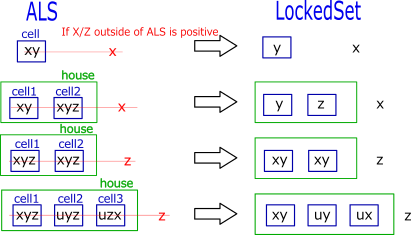
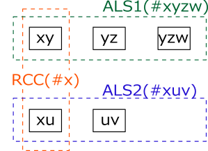
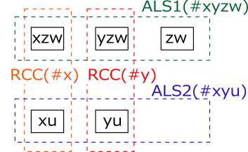
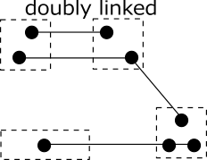

ALS
In Sudoku's advanced solution, ALS (Almost Locked Set) is used.
LockedSet is a state where there are n candidate numbers in n cells belonging to the same house.
Cells and numbers are not determined one-on-one, but they are in the Locked state as a whole.
ALS is "Locked" state with n+1 candidate numbers in n cells belonging to the same house.
ALS becomes LockedSet if the number is fixed outside ALS and the number is removed from ALS.
This alone does not hold as a solution, but it can make various analysis algorithms in combination with something.
The smallest ALS is 1 cell 2 candidate fnumbers.

RCC
The analysis algorithms involving two ALSs take advantage of the Restricted Common Candidate(RCC).
In the following figure there are two ALSs (blue and green dashed boxes) and when they satisfy the condition
"there are numbers common to the two ALSs without overlap and they are in the same house",
that The numbers are called RCC (Restricted Common Candidate).
(Orange dotted frame is different from ALS house)
As RCC belongs to the same house, RCC is in only one ALS and the other ALS does not contain RCC numerals,
however, not decided which ALS it is.
When some condition is added and RCC becomes true in one ALS, In the other ALS it is false.
In false ALS, n candidate number are in n cells and ALS becomes Locked Set.

The following figure shows a case where there are two RCCs between two ALSs (doubly linked). RCC is only for one ALS. In the case of doublylinked, the two RCCs are not offset to one ALS. There is one for each of the two ALSs. However, it do not decide which RCC is in which ALS.

ALS-RCC-ALS is called a link of ALS connected by RCC, and it can connect ALS-RCC-ALS successively and make a series of ALS.
